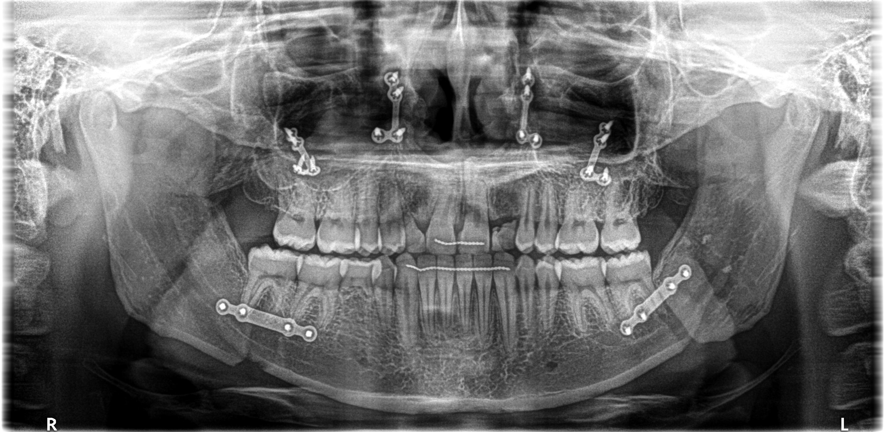
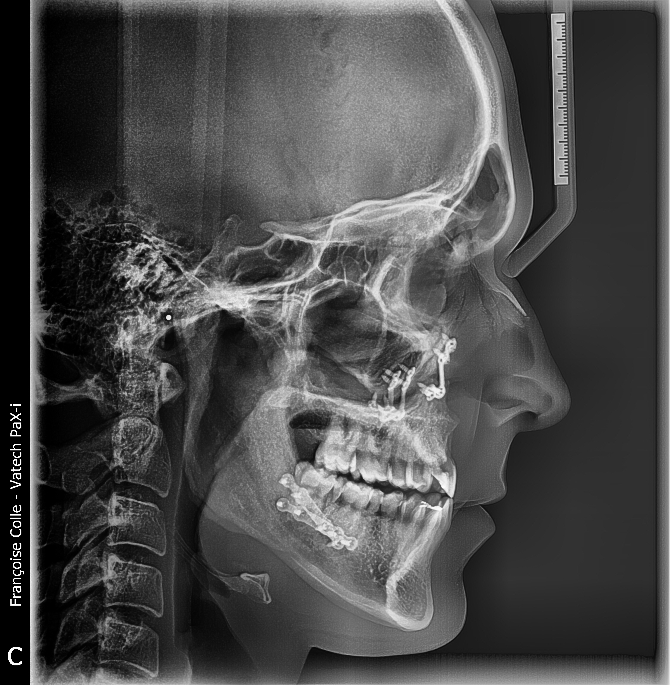

Images
- Post retirage point d'ancrage - 08/2025

- 22/10/2025 - Examen radiologique

Questions
- Le collage sur les molaires ne serait que temporaire pendant le mouvement des incisives pour faciliter celui-ci ?
- Orthodontiste Sophie: Oui, recréer ces contacts postérieurs permettra de protéger les incisives centrales pendant leur mouvement.
- Mr. Nacar: propose un collage perpétuel—des facettes dentaires. Cépendent, c'est onéreux—minimum €1000 par dent.
- Est-il possible d'utiliser une extrusion au lieu du collage si les racines sont faibles seulement au niveau des incisives centrales supérieures ?
* Orthodontiste Françoise Colle: Il est difficile d'égresser les dents postérieures. On peut le programmer mais ce ne sera que d'environ 2 mm.
* Orthodontiste Sophie: ? - Serait-il aussi possible d'effectuer des corrections esthétiques mineures telles que le redressement et le rapprochement de mes incisives centrales ?
- Mr. Nacar: Cela peut aussi être fait par des facettes dentaires.
- Orthodontiste Sophie: ?
- Madame Barbieux n'a pas voulu continuer et je ne suis pas d'accord (1). Elle est difficile d'accès. J'aimerais bien trouver quelqu'un d'autre pour le collage. Maintenant que la gouttière est faite, est-ce que l'orthodontiste, n'importe quelle autre dentiste ou occlusodontiste peut faire le collage?
- L'occlusodontiste Mr. Nacar: veut bien me faire ce collage mais ne comprend pas l'utilité de la gouttière faite par Barbieux.
- Orthodontiste Sophie: ?
- Est-ce possible que j'ai plus de céphalées à cause de ma dent de lait (incisive latérale) qui est tombée? J'ai cru remarquer plus de céphalées qui coincide avec ma perte de dent.
- Orthodontiste Sophie: ?
- Occlusodontiste: ?
- Retirer ma seconde incisive latérale de lait pour que j'aille placer des implants en zirconia moins chers à l'étranger ?
- Orthodontiste Sophie: ?